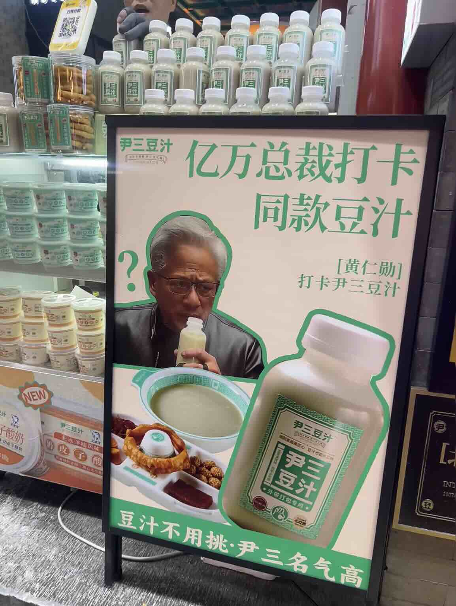
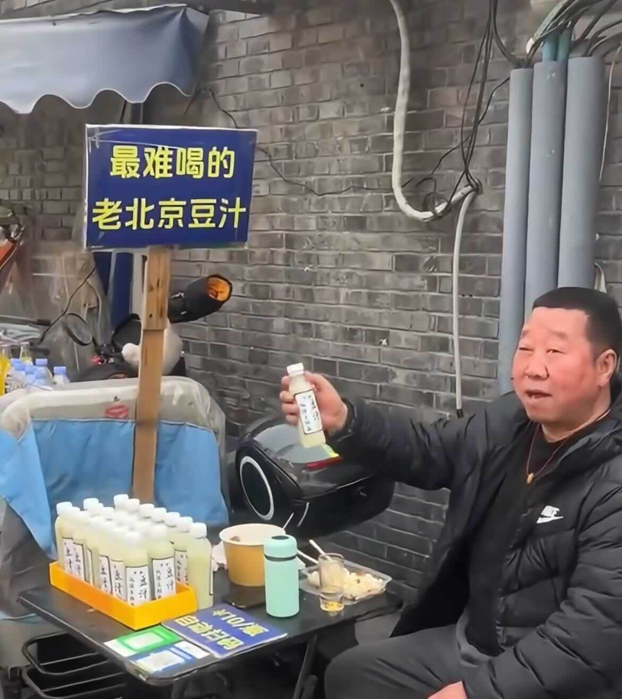

Table of Contents
Introduction
Not long ago, Nvidia CEO Jensen Huang visited Beijing and wandered the old hutongs of Nanluoguxiang. On a local's recommendation, he tried the iconic drink douzhi for the first time. Passersby captured his face — tight features, obvious discomfort — and the clip instantly went viral. The internet burst into laughter, and douzhi was once again the most talked-about snack in Beijing. Curious travelers rushed to try it, only to discover what Huang already knew: the taste is, frankly, hard to swallow.
So why has a drink that scares off most first-timers survived for hundreds of years — and even made it onto Beijing's list of intangible cultural heritage? The answer lies in a fascinating imperial backstory, a surprisingly strong nutritional profile, and the unmistakable smoky street-corner charm of old Beijing.
This guide covers all three — plus exactly where to drink the real thing in Beijing.
1. Why a "Terrible-Tasting" Drink Has Survived 300 Years — Thanks to Emperor Qianlong
Almost every outsider who tries douzhi for the first time will, like Jensen Huang, struggle to keep a straight face. Yet this humble drink has been beloved in Beijing for centuries — and the key to its fame is a legendary story from the Qianlong era of the Qing dynasty.
Douzhi was originally a byproduct: when mung beans were processed into vermicelli and starch was extracted, what was left was a thin, milky liquid. In lean times, when food was precious, Beijingers refused to waste it. They let the leftover liquid ferment naturally with lactic-acid bacteria, which turned it pleasantly sour. Diluted with water and slow-simmered over a low flame, it became a daily drink for ordinary residents — and a favorite of the Manchu Eight Banners.
The legend goes that in the 18th year of Qianlong's reign (1753), when drinking douzhi was already common among commoners, the emperor went on an incognito tour of the city. He stopped at a small shop near the Qianmen area to try it, struggled with the first sip just like any newcomer, but then grew to love its unique sour, grease-cutting flavor. He ordered the Imperial Household Department to inspect the ingredients and hygiene standards, and once the quality passed, he invited the master makers into the Forbidden Kitchens. From that moment on, every year from September to the following early May, the imperial court served douzhi after banquets to cut through the richness of roasted meats and heavy dishes. What had been a despised byproduct had become imperial food.
This imperial endorsement catapulted douzhi from a humble street drink to a symbol of Beijing's culinary heritage. The drink's popularity spread beyond the palace walls, becoming a staple in teahouses and street stalls across the city. In 2007, the "Douzhi Making Technique" was officially recognized as a Beijing Municipal Intangible Cultural Heritage, ensuring this centuries-old tradition would be preserved for future generations. Today, douzhi remains a point of pride for Beijingers and a fascinating cultural curiosity for visitors.
2. Weird Taste, Real Nutrition — 16 Amino Acids and Friendly Probiotics
Though its taste may be an acquired one, douzhi has earned its place as a beloved Beijing folk snack thanks to its exceptional nutritional profile.
Douzhi is nutritionally dense: it contains 16 essential free amino acids and 3.8g of plant protein per 100ml, with natural probiotics that support gut health. Low in fat and sugar, it's rich in vitamins C, E, and minerals. From TCM perspective, it helps clear heat, reduce fire, and relieve bloating.
Quick Nutrition Snapshot (per 100 ml)
- Plant protein: ~3.8 g
- Free amino acids: 16 types
- Probiotics: Natural lactic-acid bacteria from fermentation
- Fat / added sugar: Very low
- Key micronutrients: Vitamin C, Vitamin E, Calcium, Potassium, Selenium
Modern nutritional research supports these claims. A study in Food Control confirms that fermentation dramatically increases the absorption rate of proteins and amino acids in douzhi, allowing it to efficiently replenish energy and nutrients.
Another study in the Journal of Food Science and Technology found that fermented douzhi has significantly higher antioxidant activity, providing a biochemical foundation for anti-aging, heat-clearing, and detoxifying health benefits at the cellular level.
Notice: anyone with excess stomach acid or a stomach ulcer should go easy. If you are a first-timer, the classic Beijing way to drink it is alongside a crispy jiaoquan (fried dough ring) and a few slices of spicy pickled mustard tuber — that combination neatly balances the sour, sharp flavor and is the combination Beijingers have enjoyed for generations.
3. Where to Drink Real Douzhi in Beijing — Yin San Douzhi & the "Free If You Can Drink It" Stall
In Beijing, you essentially have two ways to get your douzhi fix: a long-established old shop that has been quietly perfecting its recipe for decades, or a viral hutong stall that turns the whole thing into a fun challenge. Pick the one that fits your travel style.
3.1 The Old-School Classic: Yin San Douzhi — The Local Favorite
Yin San Douzhi sits at 176 Dongxiaoshi Street, Dongcheng District, just north of the Temple of Heaven's north gate. Established in 1996, it has become one of the most highly recommended douzhi shops among native Beijingers — and a top stop for travelers chasing the "Jensen Huang douzhi experience." The shop sticks to traditional methods: using a decades-old fermented starter culture, slow simmering over a gentle flame for hours, and absolutely no dilution shortcuts. The result is a thick, aromatic, lingering sourness that defines authentic douzhi.
Since Jensen Huang tried Yin San Douzhi, the shop has embraced the viral moment — you can now spot his face on advertisements around Gulou area, capitalizing on the celebrity endorsement.

Besides douzhi, Jensen Huang also sampled classic Beijing zhajiang noodles. For more traditional Beijing snacks worth trying, check out our Beijing's hidden Gem Snacks guide.
3.2 The Viral Challenge: Nanluoguxiang Hutong Stall — "Free If You Don't Find It Hard to Drink"
Near Heizhima Hutong, just off the famous Nanluoguxiang alley, you will find a small mobile douzhi stall that has become something of an internet legend. The vendor's signature line is bold and simple: if you can drink the douzhi without making a face, it's on the house.
A serving costs 10 yuan. Finish a full cup smoothly, with no grimace, and you walk away without paying — sometimes even with a free second cup as a reward. Travelers from all over China make a point of hunting it down just for the photo and the story. Because it is a roving hutong stall rather than a fixed shop, opening times and locations are flexible; plan some buffer time in your day if you want to track it down.

Stall-Hunting Tips
- It's a mobile stall — no fixed storefront, so walk around Heizhima Hutong and the surrounding lanes.
- Best time to try: late morning to early afternoon.
- Cost: ¥10 per cup; free if you can finish it without flinching.
- Bring your camera — the reaction shots are half the fun.
FAQ: Douzhi for First-Timers
Q: Is douzhi really that hard to drink?
A: It is genuinely an acquired taste — sour, mildly fermented, with a smell that surprises first-timers. Most people react like Jensen Huang on their first sip. Give it two or three sips with a jiaoquan before deciding. Many people find that the more they try it, the more they appreciate its unique flavor.
Q: Can foreigners try douzhi safely?
A: Yes. It is a fermented, gently cooked drink, served hot. Just go easy if you have a sensitive stomach, ulcers, or excess stomach acid. Start with small sips and pair it with jiaoquan to help balance the flavor.
Q: What should I eat with it?
A: The classic Beijing combination is douzhi + jiaoquan (crispy fried dough ring) + spicy pickled jie lan (mustard tuber). The crispy jiaoquan and savory pickle help balance the sourness of the douzhi. Some people also enjoy it with fried dough sticks or sesame cakes.
Q: Where else can I try douzhi besides Yin San?
A: While Yin San is the most famous, there are other great options in Beijing. Try Huguosi Snack Restaurant for a more tourist-friendly experience, or Laocheng Douzhi near Qianmen for a traditional neighborhood spot. Many local breakfast stalls also serve it, especially in the old city areas.
Q: Can I buy douzhi to take home?
A: Yes! Yin San Douzhi and several other shops offer bottled douzhi that can be kept refrigerated for a few days. It's a unique souvenir for adventurous food lovers. Just be prepared for some interesting looks at airport security!
Conclusion
From a discarded cooking byproduct to a Qianlong-approved imperial drink, and now a viral Beijing snack famous for making even Jensen Huang grimace, douzhi has earned its place among the city's must-try foods. Its unique flavor, surprising nutritional value, and centuries of local history make it a defining taste of old Beijing.
If you are planning a Beijing trip and want to avoid watered-down imitations, head straight to Yin San Douzhi for the authentic version, then wander the Nanluoguxiang hutongs to try the viral "free if you can drink it" challenge. Either way, you are tasting a piece of living Beijing heritage.
Share this article:
Link copied to clipboard!


No comments yet. Be the first to share your thoughts!